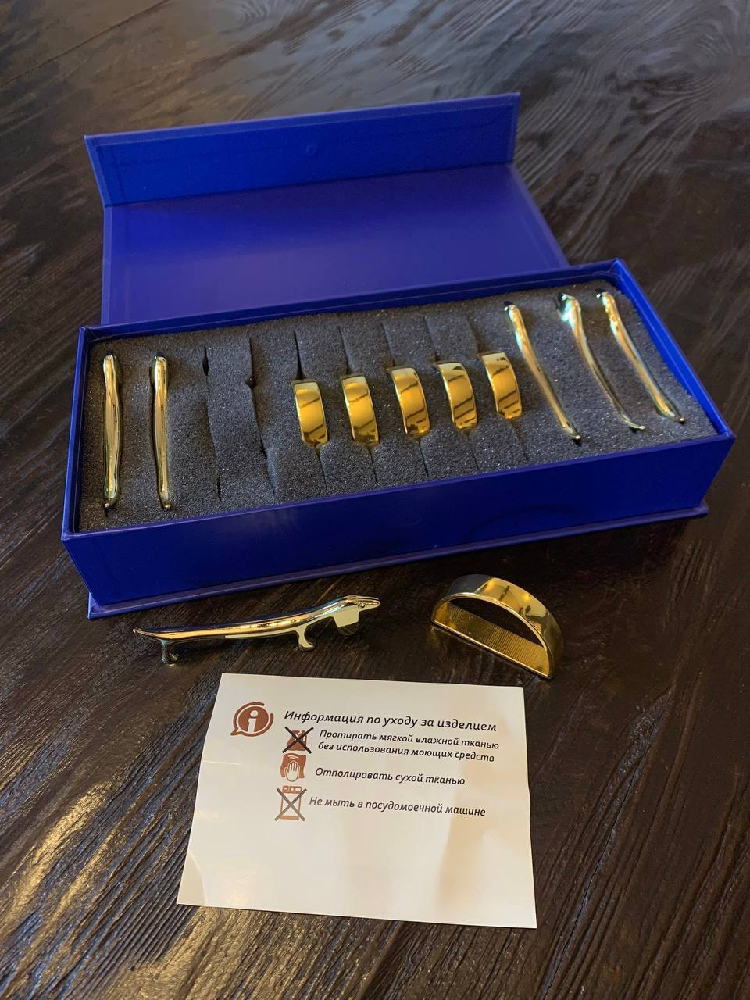

БТ эстетика HOME - бренд эстетики сервировки и деталей, которые создают уют атмосферу.
Мы создаем аксессуары для сервировки, в которых сочетаются лаконичный дизайн и внимание к мелочам. Каждое изделие – это про ощущение порядка, вкуса и продуманного функционала каждого изделия.
Porte-couteau (порт-куто) – это подставки для ножей, палочек и любых столовых приборов, которыми пользовались аристократы еще в 17 веке.
В нашем магазине подставки под приборы представлены в двух классических цветах (золоте и серебре) и самой разнообразной формы (собачки, кошки и олени).
Кольца для салфеток имеют классическую D-образную форму и минималистичный дизайн. Благодаря такой форме, кольца устойчивы на столе и хорошо фиксируют салфетку. Гладкие глянцевые кольца в сочетании с салфетками смотрятся торжественно и подчеркивают вкус хозяйки.
Изделия бренда БТ Эстетика Home в своем составе не содержат драгоценных металлов и не подлежат обязательной сертификации.
Привить культуру еды, что особенно важно при воспитании детей (они с удовольствием будут пользоваться ножом, имея на столе такие подставочки) и создать настроение приятного общения за красиво накрытым столом даже в будний день.
Мы хотим, чтобы даже обычный ужин стал семейным событием, а сервировка – частью стиля в доме!
Полный ассортимент аксессуаров для вашей идеальной сервировки

Элегантная подставка для ножей из сплава с матовым покрытием. Устойчивая, стильная, придаёт столу особый шарм.
Цвет:Золото
Элегантная подставка для ножей из сплава с матовым покрытием. Устойчивая, стильная, придаёт столу особый шарм.

Нежное кольцо с перламутровым покрытием, подчеркнёт утончённый вкус.
Лаконичное латунное кольцо с золотистым оттенком.
Набор из 6 Порт-куто.
Набор из 12 Порт-куто
Набор из 6 колец и 6 Порт-куто.